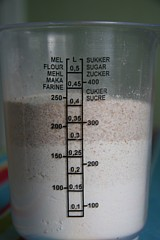
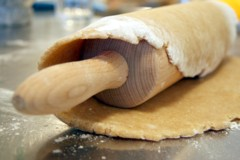
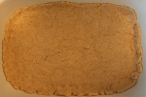
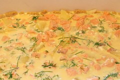
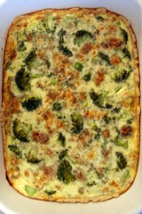

(Tri) Pite
Spremiti tri pite, zvuči prilično pretenciozno, ali zapravo nije: testo je isto, tako da se, jednom napravljeno, može koristiti za više različitih varijanti. Uprošćeno, sve tri pite koje ćemo predložiti se spremaju na sledeći način: osnova je testo/kora, sledi punjenje ("motiv", ono po čemu nazivamo pitu), preko dolazi preliv i pita je spremna za rernu. Obzirom da je i preliv više-manje isti ispada da će za pripremanje više različitih pita (pod uslovom da na raspolaganju imate veliku rernu i posude) trebati tek nešto više vremena nego za pripremanje jedne - ovu činjenicu iskoristiti i napraviti pita-party, zaključak je dosadašnjeg dela priče.
Da podjemo od osnove a kod pite je to i u bukvalnom smislu kora: 4dl brašna (oko 200gr), malo soli, 100gr putera (moze i margarin, ali...), 100ml hladne vode. Sada zasucite rukave i zamesite glatko testo. Testo treba da odleži jedno pola sata u frižideru, nakon toga vreme je da iz kuhinjskog arsenala izvučete oklagiju a rernu uključite na 225. Kora treba da pokrije dno vatrostalne posude, izbockajte ga viljuškom i pecite desetak minuta.

Punjenja: 1. losos, krompir, crni luk, mirodjija. Idealno, biće to dimlljeni losos (100gr.), mada će i parčići kuvani 10tak minuta sjajno odraditi posao; krompir, isečen na trakice treba prokuvati nekoliko minuta (moze i sa ribom); pola glavice luka na rebra pa sve na koru.
2. brokoli, plavi sir. Jednostavno, svež brokoli, 200gr. i 150gr. izmrvljenog plavog sira.
3. spanać, crni luk, feta. Na maslinovom ulju propržite rebra crnog luka, dodajte spanać na minut. Fetu isecite na kockice ili izmrvite, umešajte u spanać pa sve na koru.
 Preliv: 3 jajeta, 3dl mleka, 1dl pavlake (opciono malo rendanog kačkavalja), umutiti u homogeni masu. Ostaje samo da prelijete pitu i da je pečete oko 30min na 200-225C. Uz ovako pripremljenu pitu jako će dobro ići neka sveža salata (mešavina: zelena salata, krastavac, paradajiz, crne masline, paprika, limun maslinovo ulje) i čaša nekog suvog, hladnog belog vina, neki fin Chardonnay, možda.
Isuviše jednostavno da ne bi i sami probali.
 RSS feed
RSS feed
 sadržaji se objavljuju pod
sadržaji se objavljuju pod
Komentari
E da znaš da ću da probam. Ja nekako imam fobiju od testa, uvek se plašim da će katastrofalno da ispadne, al sad nešto gledam ovaj tvoj recept i zvuči mi skroz izvodljivo.
elektrokuhinja | 10.09.07 21:58
I ja razmsiljam slicno kao Elektrokuhinja
La Lara | 11.09.07 09:40
Sjajni recepti! Nego, koji je to plavi sir?
Maja | 11.09.07 10:16
Plavi sir verovatno odgovara onome sto se kod nas naziva "budjavi sir" :)
Ne znam da li se na slici provaljuje, mislim da je mesavina mekog(2dl), ostrog(1dl) i integralnog(1dl) brasna dobitna kombinacija.
kiko | 11.09.07 15:23
Ja bih ovo jela ali ne znam da li bih pravila... Mislim na koru. Kora ionako moze da se kupi, yeee!
LazyButFeisty | 11.09.07 18:21
divim se jednostavnosti u svakom pogledu!
yello | 12.09.07 21:26
Postoje li tu neke mere?Mislim koliko krompira,mirodjije,luka,spanaca,fete?Ja sam pocetnik i jos uvek se strogo drzim recepta:-)
Aleksandar | 30.01.10 07:13
Aleksandre, pre svega nadam se da shvatas da je u pitanju predlog za tri razlicite pite :)
Jedan srednji krompir ce biti dovoljan. Mirodjije 3-4 prstohvata, po ukusu (sveza je bolja, naravno).
Spanaca 250g., blansirati na 10sec u kipucoj vodi. Luka, glavica srednja na rebra. Feta 100gr.
Pozdrav!
kiko | 31.01.10 20:29